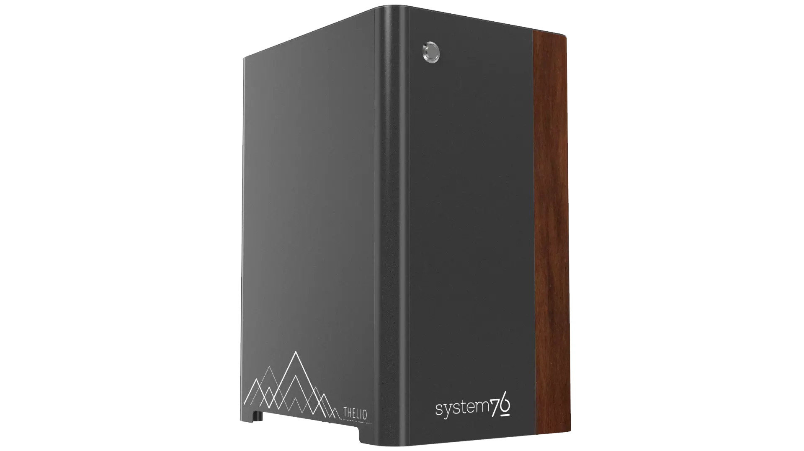

Thelio Mira (thelio-mira-b1.0)

The System76 Thelio Mira is a desktop with the following specifications:
- CPU options
- Supports Intel 10th and 11th Generation (Comet Lake and Tiger Lake) CPUs
- Motherboard
- ASUS ROG STRIX Z590-A GAMING WIFI running System76 Firmware (non-open)
- Intel Z590 chipset
- Daughterboard
- Thelio Io board running open-source firmware
- GPU options
- Up to two GPUs, depending on configuration (2x PCIe 4.0/3.0 x16)
- GPU size:
- Internal clearance: 318.80mm
- Recommended maximum length: 308.80mm
- Tested with the following GPUs:
- Integrated Graphics
- HDMI 2.0 (11th Gen) or 1.4 (10th Gen), DisplayPort 1.4
- NVIDIA GeForce GTX 1650 (maximum 1)
- HDMI 2.0b, DisplayPort 1.4a, DL-DVI-D
- NVIDIA GeForce RTX 3060 (maximum 1)
- HDMI 2.1, 3x DisplayPort 1.4a
- NVIDIA GeForce RTX 3060 Ti (maximum 1)
- HDMI 2.1, 3x DisplayPort 1.4a
- NVIDIA GeForce RTX 3070 (maximum 1)
- HDMI 2.1, 3x DisplayPort 1.4a
- NVIDIA GeForce RTX 3070 Ti (maximum 1)
- HDMI 2.1, 3x DisplayPort 1.4a
- NVIDIA GeForce RTX 3080 Ti (maximum 1)
- HDMI 2.1, 3x DisplayPort 1.4a
- NVIDIA GeForce RTX 3090 (maximum 1)
- HDMI 2.1, 3x DisplayPort 1.4a
- NVIDIA Quadro RTX 4000 (maximum 2)
- 3x DisplayPort 1.4, DisplayPort over USB-C (VirtualLink)
- NVIDIA Quadro RTX 5000 (maximum 2)
- 4x DisplayPort 1.4, DisplayPort over USB-C (VirtualLink)
- NVIDIA Quadro RTX 6000 (maximum 2)
- 4x DisplayPort 1.4, DisplayPort over USB-C (VirtualLink)
- NVIDIA Quadro RTX 8000 (maximum 2)
- 4x DisplayPort 1.4, DisplayPort over USB-C (VirtualLink)
- Integrated Graphics
- Expansion
- 2x PCIe 4.0/3.0 x16 (GPU slots)
- 1x PCIe 4.0/3.0 x16 (additional slot; single-height cards only)
- 1x PCIe 3.0 x4
- Memory
- Up to 128GB (4x32GB) dual-channel DDR4 DIMMs @ 3200 MHz
- Tested with the following RAM modules (may ship with other tested modules):
- Kingston HyperX HX432C16FB3/8 (8GB/stick)
- Kingston HyperX HX432C16FB4/16 (16GB/stick)
- Kingston HyperX HX432C16FB3K4/128 (32GB/stick)
- Networking
- 1x 2.5-Gigabit Ethernet (Intel I225-V)
- Wi-Fi 6 (Intel AX200)
- Power
- C13 power cord
- 650W minimum PSU
- Dual-GPU configurations require 750W or 1000W, depending on GPU power requirements
- Tested with the following PSU models (may ship with other tested models):
- Sound
- 3.5mm line out, line in, microphone jacks
- Up to 7.1-channel audio output
- Realtek ALC4080 audio chipset (with Savitech SV3H712 amplifier)
- HDMI, DisplayPort, USB-C DisplayPort audio (depending on GPU)
- Storage
- 1x M.2 (PCIe NVMe Gen 4), M key
- Backwards compatible with PCIe NVMe Gen 3.
- Only active with 11th Gen CPUs.
- 2x M.2 (PCIe NVMe Gen 3), M key
- Backwards compatible with SATA III.
- 4x 2.5" SATA
- 1x M.2 (PCIe NVMe Gen 4), M key
- USB
- 1x USB 3.2 Gen 2x2 Type-C
- 4x USB 3.2 Gen 2 Type-A
- 1x USB 2.0 Type-C
- 4x USB 2.0 Type-A
- Dimensions
- 43.635cm × 25.3cm × 33.1cm